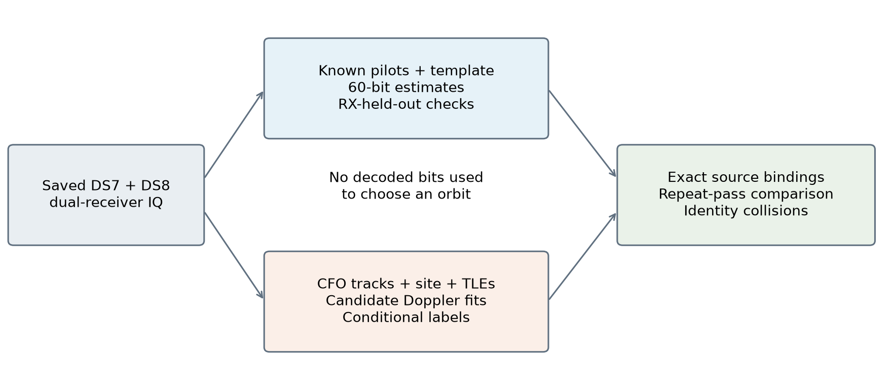
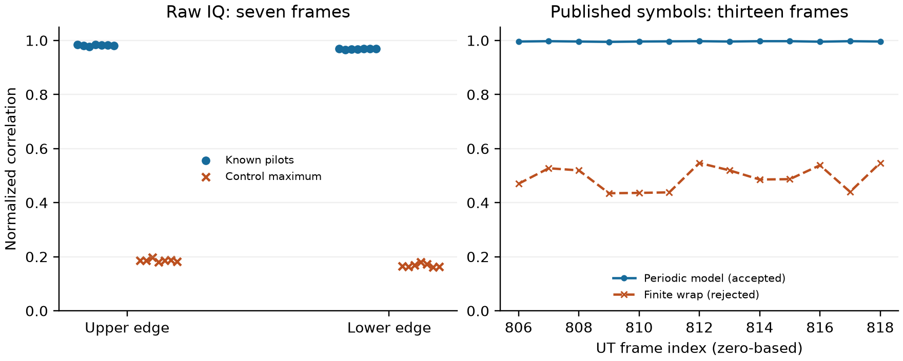
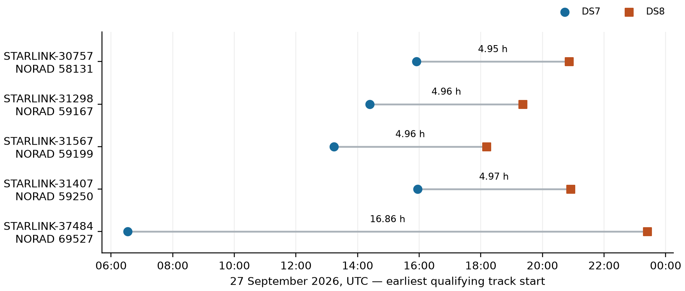
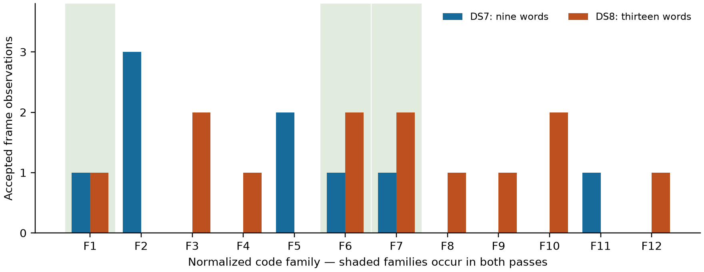
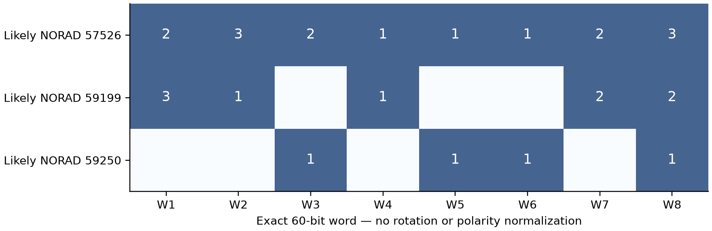

Publicly described Starlink synchronization sequences and edge pilots make it possible to investigate portions of a roughly 240 MHz downlink using a much narrower receiver. A useful next question is whether recoverable, recurring bits identify the transmitting spacecraft or convey navigation information.
Recurring bits, repeated observations of a spacecraft, and decoded spacecraft identity are different claims. This study asks whether independently recovered 60-bit patterns persist across observations assigned to the same satellite, and whether those patterns distinguish different likely satellites. It also tests a lower-band-edge mapping failure that initially prevented a repeat-pass comparison. Satellite assignments remain orbital inferences, not ground truth.
Across selected excerpts from two roof-receiver datasets, we recover 85 receiver-agreed 60-bit codeword observations representing 27 normalized code families. Five likely satellite identities recur across the datasets in the bounded track survey. For likely STARLINK-31567 (NORAD 59199), nine DS7 words and thirteen DS8 words include three exact words recurring across passes roughly five hours apart. However, eight exact words in the overall study occur under multiple likely identities. A word-only identity lookup therefore fails under these assignments. No satellite-ID, UTC, position, orbit, or user packet field is decoded. These results support recurring physical-layer structure, not a navigation-message interpretation.
This is a dated exploratory technical report, prepared on 28 September 2026 from saved DS7/DS8 evidence. It reports historical receiver and temporal holdouts accurately; it is not a new randomized validation campaign or a promotion of the orbital labels to confirmed identities. The publication adds no RF collection and reruns no bulk radio campaign. Figures are generated by the versioned report tool from digest-bound local inputs. Measurement files and raw IQ are deliberately excluded from this publication.
The published Starlink Ku-band waveform model uses a 1024-point OFDM transform, 234.375 kHz subcarrier spacing, 4.4 microsecond symbol intervals, and a 750 Hz frame grid [1]. Qin and colleagues describe exact edge pilots, a reference template, and low-entropy 60-bit tessellation codes, or T-codes [2]. A T-code repeats across frequency and changes its cyclic phase by 16 positions between OFDM symbols. The authors conjecture a connection to unladen allocations; that is not an established payload interpretation.
We distinguish four hypotheses:
The original upper-edge acceptance thresholds were reused for this bounded extension. The repeat-target selection and extra-visit selections were saved before decoding those excerpts. This was adaptive exploratory work, not a preregistered experiment: the lower-edge mapping was corrected after a failed control, and subsequent visits were selected after the first visit failed.

DS7 and DS8 are frozen membership snapshots of existing dual-receiver recordings at approximately 37.8491° N, 122.4858° W. The nominal mounting separation is 80 mm, with nominal outward tilt; actual RF phase centers, altitude, directed baseline, and antenna pointing are not surveyed. Orbital calculations use the recorded site coordinates and an assumed zero-metre ellipsoidal altitude. They do not use an uncalibrated antenna beam to exclude satellites.
| Membership quantity | DS7 | DS8 | Combined |
|---|---|---|---|
| Complete recordings | 88 | 65 | 153 |
| Visits | 194,934 | 143,988 | 338,922 |
| Compressed IQ, decimal GB | 860.110 | 590.316 | 1,450.426 |
| Recordings at 10 MS/s | 19 | 13 | 32 |
Other recordings use 7.5, 5, or 2.5 MS/s. DS8 admits complete published recordings strictly after DS7 and finalized by 2026-09-28 00:22:59 UTC. Session IDs and source-manifest digests are disjoint. All 65 DS8 pose companions and the membership seals were verified. IQ is referenced in place: the snapshot is neither a payload backup nor a retention hold. Minting checked metadata and chunk accounting, not a new hash pass over 590 GB of IQ.
This report does not decode all 153 recordings. It combines 5,142 existing DS7 track annotations with 245 newly surveyed tracks from four DS8 recordings. Of thirteen DS8 10 MS/s recordings, four had suitable cached upper-edge detections, seven had none, and two had incomplete analysis products. These are readiness/selection outcomes, not measurements of absence of transmission.
Each decoded visit uses 120 ms of stored IQ from both receivers. The full-word sample contains ten successful visits: four DS7 and six DS8. An additional DS7 visit failed decoding, and an additional DS8 visit lacked a qualified matching peer receiver. Reanalysis of one rejected visit is not counted as a new visit. The population is selected for available pilot evidence, not representative sampling of traffic, satellites, or the full corpus.
The decoded excerpts are sampled at 10 MS/s. Resampling and mixing place the captured band on the native OFDM grid; this does not reconstruct unobserved parts of the 240 MHz waveform. We retain 24 non-pilot bins around the eight known edge pilots. Upper bins are 476–487 and 496–507; lower bins are 516–527 and 536–547, in zero-based native FFT coordinates.
Pilot symbols 22–301 determine carrier/phase calibration; symbols 2–21 are reserved for a known-symbol check. Pilot-derived timing drift corrects later frame windows. The default channel estimate uses the known secondary synchronization sequence (SSS) from other frames, smoothed across frequency. Unknown header or T-code bits do not enter this calibration. The two receiver fits are separate, but share templates, conventions, and the physical scene.
After removing the reference template, let z[i,n] be the observed complex
deviation at OFDM symbol i and compact carrier coordinate n. Compact
coordinates order non-pilot, non-gutter carriers by physical frequency. The
validated periodic model is:
z[i,n] ≈ a[i,n] · T[(n − 16i) mod 60] + noise,
T[j] ∈ {−1, +1}.
The lower retained bins correspond to compact coordinates 4–27, the upper ones to 976–999. Over the sampled symbols both edges cover every code slot. The word estimate is the sign of the mean real deviation assigned to each slot. No even-parity rule, desired code family, or satellite label constrains it.
RX0 chooses among 64-symbol windows beginning at symbols 14, 46, …, 238. Within each window, alternating symbols provide the RX0 selection check. RX1 independently estimates the word and supplies receiver-held-out evidence. Acceptance requires RX0 selection correlation >0.25, RX1 correlation >0.25, RX1 correlation exceeding 1,000 equal-weight shuffled-code controls, and agreement on all 60 bits between receivers. Correlation is mean real code-weighted deviation divided by RMS complex amplitude. Control maxima are empirical diagnostics, not corrected familywise p-values. Frames within a visit are correlated; the codeword count is not an independent sample count.
A family is the lexicographically smallest bit string among all 60 cyclic rotations of a word and its global complement. Exact-word recurrence uses neither rotation nor complement. Different modulation regions and weak/fading signals can fail these gates without implying a different satellite.
The saved CFO tracks are dealiased and normalized to 11.2 GHz. Candidate positions/velocities are propagated from causal archived TLEs. At the recorded receiver site, line-of-sight velocity predicts Doppler; one constant frequency offset per track absorbs carrier/hardware offset. The observed CFO is not rescaled a second time from its acquisition RF.
The DS8 screen considers the catalogue above −2° elevation at the track midpoint and requires at least 95% of a candidate track above the horizon. It ranks fits using the first 60% of observations and evaluates the final 40%. The label is called conditional only with at least 20 observations, at least 10 s span, validation RMS ≤250 Hz, training and validation runner-up gaps ≥100 Hz, and ≥25 Hz validation improvement over a fitted linear-time null. Seventy-two of the 245 DS8 tracks pass this screen.
Existing DS7 labels used a randomized whole-visit partition, a previously constructed candidate bank, and additional time/height/drift checks. Their candidate search and validation protocol are not identical to DS8's. In particular, DS8's chronological holdout is historical exploratory evidence, not compliance with the repository's current randomized-group validation standard. A common clock/orbit/model error can affect both receivers. Neither category is a posterior probability or confirmed spacecraft identity.
Decoded excerpts are joined to labels by persistent-track membership and exact acquisition solutions. Duplicate candidate ranks are tolerated only if the complete probe and all other numerical solution fields agree. Time proximity, CFO proximity, and shared words alone are insufficient. An independent reconstruction verified these bindings for the five extracted visits of the STARLINK-31567 candidate, including the rejected one.
An initial test applied the 64-symbol T-code decoder to seven clean UT raw-IQ frames. Low correlations were initially treated as a lower-edge failure. Inspection showed that even the upper-edge test failed: those frames lacked the long contiguous T-code blocks assumed by the test. We separated waveform demodulation from periodic-code mapping rather than accepting the failed control as proof of either.
Raw-IQ check. Across the seven UT frames, lower-edge known-pilot held-out correlation is 0.966–0.970, compared with a maximum 0.180 among 100 shifted pilot-sequence controls. Upper-edge correlation is 0.978–0.984, with controls below 0.197. This validates demodulation of known pilots, not recovery of long T-code blocks from those seven frames.
Mapping check. From the published UT hard-symbol dataset [3], bounded HTTP range reads retrieved 122,181 bytes containing the lower edge of zero-based frames 806–818. Their source ETag agrees with the previously obtained upper edge. We select the word and window using the upper edge, then predict the lower edge without fitting it. The periodic model gives correlation 0.9948–0.9974 in all 13 frames. A rejected model that wraps a truncated 1004-element carrier vector gives only 0.435–0.547 at the same code phase. The correction leaves all earlier upper-edge mappings unchanged.

Five identities intersect between DS7's likely labels and the 72 conditional DS8 labels. Times below are the earliest qualifying track starts, UTC on 27 September 2026. Track counts include receiver replicas and fragments; they are not counts of independent passes.
| Candidate satellite | NORAD | DS7 UTC | DS8 UTC | DS7 / DS8 tracks |
|---|---|---|---|---|
| STARLINK-30757 | 58131 | 15:54:57 | 20:51:42 | 1 / 5 |
| STARLINK-31298 | 59167 | 14:24:00 | 19:21:36 | 2 / 3 |
| STARLINK-31567 | 59199 | 13:13:42 | 18:11:10 | 3 / 3 |
| STARLINK-31407 | 59250 | 15:56:36 | 20:54:32 | 1 / 1 |
| STARLINK-37484 | 69527 | 06:32:28 | 23:24:18 | 4 / 1 |

This candidate supplies 10 MS/s recordings at both epochs. DS7 captured the lower channel edge, DS8 the upper edge. The first DS7 visit, 786, failed: 0/24 frames passed after mapping correction. A pilot-only channel alternative also gave 0/24 on those same frames. Two additional independently labelled DS7 tracklets were selected, then their strongest bound pilots selected the visits below. A planned DS8 visit, 1074, lacked a qualified matching receiver peer and contributes no accepted codewords.
| Dataset | Visit | Edge | Accepted / attempted frames | Families |
|---|---|---|---|---|
| DS7 | 857 | Lower | 5 / 8 | 3 |
| DS7 | 1014 | Lower | 4 / 8 | 4 |
| DS8 | 1246 | Upper | 7 / 8 | 6 |
| DS8 | 1389 | Upper | 6 / 8 | 6 |
DS8 visits 1246 and 1389 are 19.2756 s apart within one pass, not separate orbital returns. The DS7 observation is approximately five hours earlier. The DS7 pair contains nine words from six families; the DS8 pair contains thirteen words from nine families. Their union is 22 observations and twelve families. Three exact words, as well as their three families, occur in both:
001101011101001111110101011111011101010110011101111100010101
001101110101100111010101101101010101001101011111110101010101
111111010101101101111111011111011111010101110101100111111111
These are exact measured strings, with no cyclic or polarity normalization.

scan-fw-7c504d862c2326b4 (visits 857, 1014) and DS8 session
scan-fw-4458a753c0831235 (visits 1246, 1389). Bars count accepted frame
observations per normalized family; highlighted families occur in both passes.
Source: saved receiver-validated words, 9 DS7 and 13 DS8 observations. Family
indices are local to this figure. This is conditional repeat-pass evidence,
not an independent confirmation of the orbital identity.The complete accepted sample comprises 47 DS7 and 38 DS8 codeword observations, 85 total, spanning 27 families. Of the 38 DS8 observations, 28 match families in the original 38-word DS7 sample; 34 match the expanded DS7 family set after the repeat-pass follow-up. The latter is a descriptive comparison, not a prospectively held-out prediction score.
There are eight exact-word collisions across distinct likely identities and eleven family collisions. One exact word is shared under NORAD 57526, 59199, and 59250. Thus uniqueness fails even without permitting cyclic rotation or global polarity inversion. Conversely, a single likely spacecraft produces many words, so a constant per-satellite T-code is not supported. These findings do not rule out a longer sequence, another header region, or a combination of fields carrying identity information.

Recovered structure is not decoded metadata. The observations are template-relative physical-layer signs, not FEC-verified packets. Known pilots and SSS support calibration; the recovered bits themselves have no established ID, time, position, or ephemeris semantics. No user traffic was decrypted.
Orbit assignments are conditional. Incorrect TLE associations could alter both the persistence and cross-identity conclusions. The midpoint horizon screen can omit a candidate crossing the horizon within a track. DS7's prior candidate bank and DS8's screen differ. Randomized whole-group revalidation, broader nuisance-model checks, and independent identity ground truth are needed before promoting satellite labels. Equal observed codes must never be used to strengthen labels and then counted as independent evidence for them.
Header evidence remains insufficient. Some upper-edge 24-sign samples at header symbol 4 repeat across receivers and time splits. The repeated-target excerpts do not pass strict split stability. Lower and upper edges sample different header subcarriers and cannot be directly equated. A stable header field remains a hypothesis, not a result.
Position cannot be inferred from this design alone. Both datasets use one receiver site. Changing satellite azimuth/elevation changes viewing geometry, not receiver geography. For example, the NORAD 59199 candidate's track-midpoint azimuth ranges shift from approximately 160–200° in DS7 to 246–281° in DS8. That does not establish a geographic-position encoding.
Selection and dependence limit generalization. Strong cached pilots, available analysis products, few passages, shared receiver hardware, repeated frames, and exploratory model changes all restrict the effective sample size. No overall detection probability, bit-error rate, or constellation-wide code inventory is claimed. Failed excerpts and unavailable peers remain failures in the accounting rather than disappearing from the report.
The next falsifying experiment should fix the decoder and candidate-label protocol, randomize whole independent visits or passes with a recorded seed, and reserve unseen passes before inspecting header fields. It should require exact receiver agreement, retain negative controls, and test whether a field is stable within a satellite and discriminative across satellites. Multiple known receiver locations would be required to test geographic semantics.
This publication contains the report, generated illustrations, PDF, rendering source and input hashes. It contains no IQ arrays, decoded-bit CSV, numerical archives, source-paper PDFs, or downloaded UT datasets. Aggregate tables and illustrations are report content. The local measurement records are therefore not independently reproducible from this repository checkout alone.
The evidence snapshot is identified by the adjacent SHA-256 list. It binds the
DS7/DS8 manifests, joint results, decoded-word inventory, UT validation, repeat
track bindings, selected excerpt inventories/results and analysis source.
Raw excerpts are hash-bound in their inventories; source readers use immutable
session manifests. The installed storage/propagation reader release is
17484895464c225ebba977487aa36d3d81658bd8. The numerical work used NumPy/SciPy,
single-threaded BLAS and bounded offline commands; excerpt processing was
limited to saved visits. There is no campaign-wide runtime benchmark.
For an authorized local workspace holding the bound evidence, regenerate publication assets with:
OPENBLAS_NUM_THREADS=1 uv run --no-project \
--with numpy --with matplotlib --with markdown --with weasyprint \
python tools/render_ds7_ds8_paper.py --workspace /path/to/analysis-workspace
The renderer verifies every listed input hash before generating figures. It does not read raw IQ or rerun orbital matching. Nineteen decoder tests and four comparison/binding-helper tests passed in the analysis workspace, along with the 13-frame UT mapping check and reconstruction of the five repeat-target bindings. These checks support implementation consistency; they do not substitute for independent experimental replication. This is version 1 of a historical report; changed input membership or methods require a dated update.
Narrowband edge recordings can recover complete recurring 60-bit words with independent receiver agreement. Correct lower-edge mapping enables a comparison between two likely passes of STARLINK-31567: three exact words recur roughly five hours apart. Their recurrence is useful structural evidence, but the observed cross-identity collisions reject a unique-ID interpretation for an individual T-code. The next substantive advance is validated header semantics with independent identity and geographic ground truth.